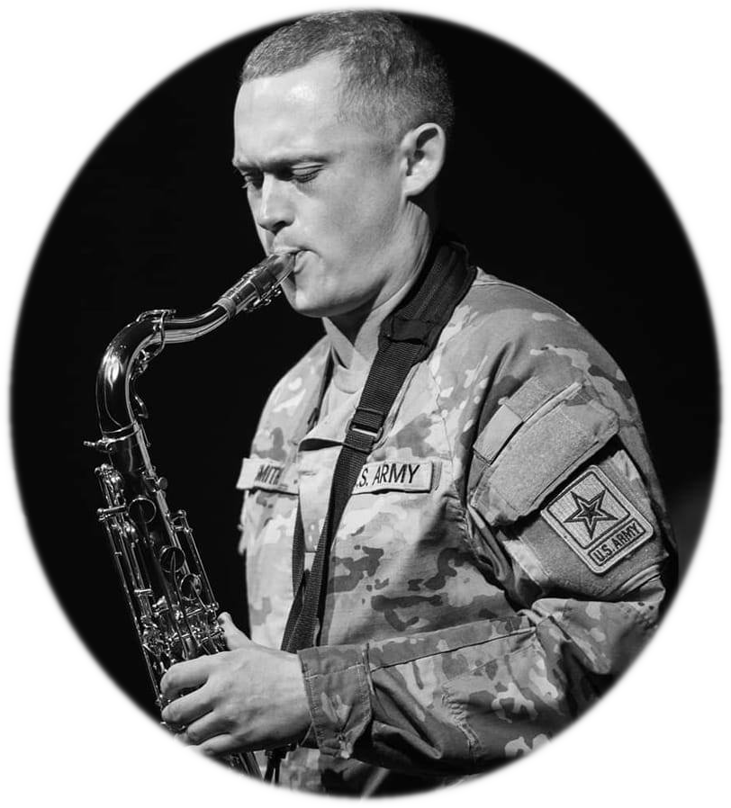
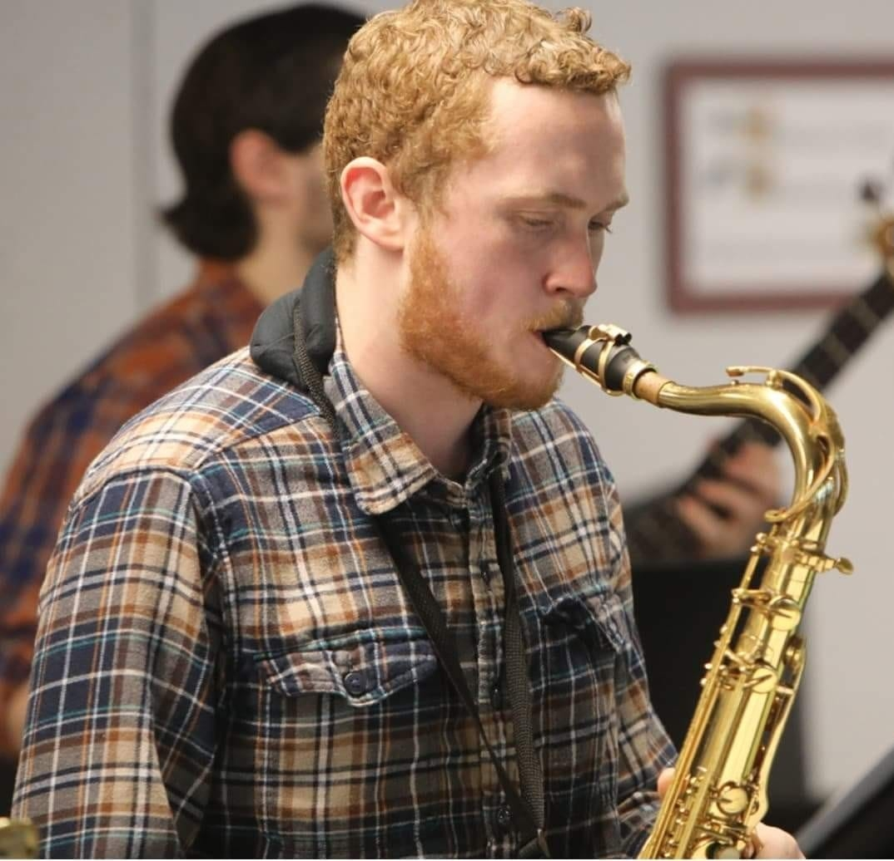

| |
|
|
Elijah Smith-Antonides is a Tenor Saxophonist from New Hampshire, raised in Gloucester RI. Elijah has a degree in Jazz performance and is also a member in the 88th Army band for Rhode Island’s Army National Guard.
He has studied under the master musician John Mckenna, Dr. Stephen H. Lajoie, briefly with legendary Chad LB, playing with the RIC Jazz Big Band, and other jazz combos. Elijah’s playing is influenced by great players such as Charlie Rouse, Wayne Shorter, Michael Brecker, Sonny Rollins, Miles Davis, Thelonius Monk and much more. He is known for his studious 6-8 hour long daily practice sessions. His lessons are very goal oriented, focusing on weaker aspects of playing and working to improve what holds students back. In additions to playing saxophone, Elijah also will play electric bass in local bands
